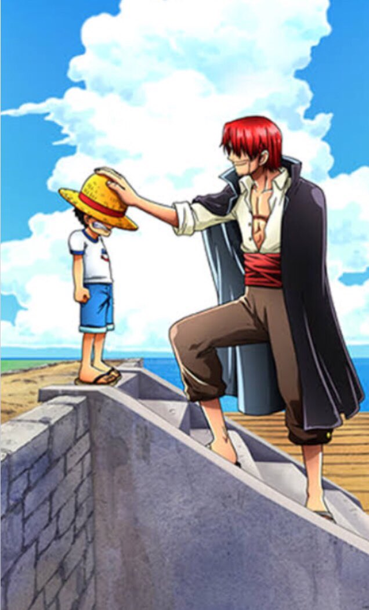

Character Outline
Statics
| nickname | bounty | age | The devil fruit | origin | stature | birthday |
|---|---|---|---|---|---|---|
| Straw Hat Luffy | 1,500,000,000 | 19 years old | Gum-Gum Fruit | East Blue | 174cm | May 5th |
Like
Straw Hat Pirates
| Born in Foosha Village, Luffy is the son of Monkey D. Dragon, the leader of the Revolutionary Army, and the grandson of the Marine hero Monkey D. Garp, and their family carries the initial and Will of D. Luffy met "Red-Haired" Shanks, who gave Luffy the very straw hat that has become Luffy's signature accessory, having gifted it to the boy as part of a promise for them to meet again someday after he became a great pirate. |  |